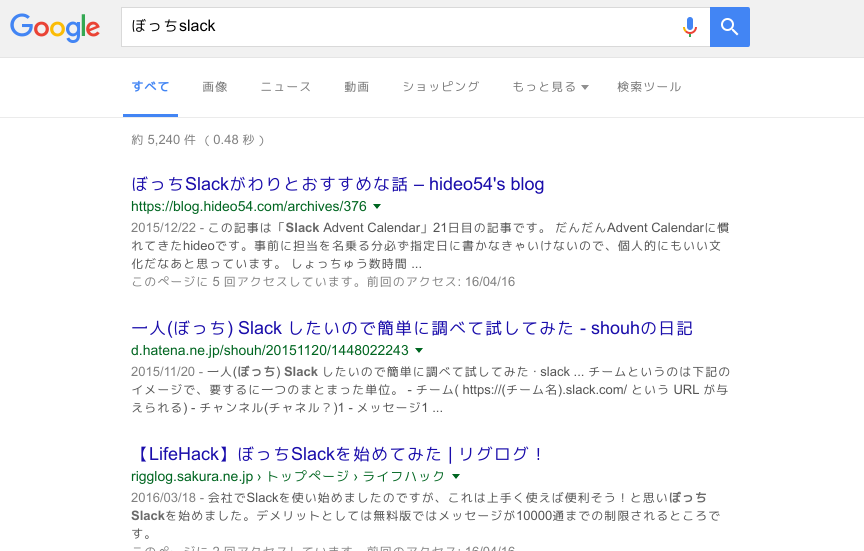

<!doctype html>
<html>
	<head>
		<meta charset="utf-8">
		<meta name="viewport" content="width=device-width, initial-scale=1.0, maximum-scale=1.0, user-scalable=no">

		<title>ぼっちsalck</title>

		<link rel="stylesheet" href="css/reveal.css">
		<link rel="stylesheet" href="css/theme/simple.css">

		<!-- Theme used for syntax highlighting of code -->
		<!-- <link rel="stylesheet" href="lib/css/zenburn.css"> -->
		<link rel="stylesheet" href="lib/css/dracula.css">

		<!-- Printing and PDF exports -->
		<script>
			var link = document.createElement( 'link' );
			link.rel = 'stylesheet';
			link.type = 'text/css';
			link.href = window.location.search.match( /print-pdf/gi ) ? 'css/print/pdf.css' : 'css/print/paper.css';
			document.getElementsByTagName( 'head' )[0].appendChild( link );
		</script>


        <style rel="stylesheet">
         .reveal .slide-number {
             font-size: 32px !important;
         }
        </style>

	</head>
	<body>
		<div class="reveal">
			<div class="slides">
				<!-- <section>Slide 1</section>
					 <section>Slide 2</section> -->
				<section data-markdown data-separator="^\n---$" data-vertical="^\n>>>$">
					<script type="text/template">
						## ｢ぼっちslack」

						---
						## 自己紹介

						---

						## masaponto
						- OFLS 2年目
						- 最近
						  - Python3
						  - 機械学習
						  - 研究関連の資料を書く機会が多くなった

						---

						##　今日の話
						- 「プログラミング言語とは｣の話
						- ｢プログラミング入門」の話

						---

						## いろいろ聞いたけど

						---

						## プログラミングによって具体的に何ができるか?

						---
						## 研究
						- 機械学習
						- 実行してから結果が出るまでに時間がかかる
						- プログラム実行が終了したら通知させたい

						---
						## そこで

						---
						## ぼっちslack


						---
						## 「slack｣とは
						</img>
						- https://slack.com
						- チームコミュニケーションツール
						- 外部webサービスとの連携が容易
						- 強力なテキスト検索
						- 基本無料 (課金して機能追加できるよ)

						---
						## 「ぼっち」とは
						- ひとりぼっちのこと
						- 独法師 -> ひとりぼっち -> ぼっち

						---
						## ぼっちslack
						- 本来、チームで利用するが、ぼっち(独り)で利用する

						---
						## OK Google !
						</img>

						---
						## プログラムの結果を
						## ぼっちslackに通知させよう

						---
						## kamebot

						https://github.com/masaponto/kamebot
						


						---
						## とある Python 3 コード

						<pre><code class='python' data-trim data-noescape>
						def main():
						    print("院にイン!!!!")

						if __name__ == "__main__":
						    main()
						</code></pre>

						---
						## こうして

						<pre><code class='python' data-trim data-noescape>
						from kamebot import Kamebot

						kame = Kamebot(channel="#random", error_comment="Yabai!!!!!!!")
						@kame.comment
						def main():
						    print("院にイン!!!!")

						if __name__ == "__main__":
						    main()
						</code></pre>

						---

						# Slack
						

						---
						

						---
						## テキストファイルとして
						## 送ることもできる

						---
						# ところが...

						---
						## slacktee
						- https://github.com/course-hero/slacktee
						- 標準出力されたものをslackに送るコマンドラインツール
						<pre><code class='sh' data-trim data-noescape>
                        $ echo "I wanna eat sushi" | ./slacktee.sh
						</code></pre>

						---
						## 強いのが既にあった

						---
						## でも、kamebotは関数ごとにteamやchannelを指定できる
						#### ※ただしPython3に限る

						---
						## わりとkamebot使ってます

						---
						## これが、ぼっちslackを
						## 始めたきっかけである

						---
						## ところで...

						---
						## OFLSのシフト表
						- Google splead sheetで管理
						- 毎日見にいくのは面倒

						---
						## そこで

						---
						## ぼっちslack!!!

						---
						## ofls-shift
						https://github.com/masaponto/ofls-shift
						

						---
						## それはなんですか
						- Google splead sheetにあるシフト表をcsvデータで持ってきて、
						いい感じに表示するコマンドラインツール
						- kamebotと組み合わせれば、ぼっちslackに投げれる
						- systemdで定期実行させてslack botとして運営


						---
						## 質問
						### JSONでとってこれないの？
						- splead sheetを完全に公開しないとだめっぽい(?)。
						- OFLSの表は限定公開。

						---

						## 質問
						### Google Apps Scriptを使えば？
						- 知らん
						- Google calendarとの連携もしやすくて便利そう


						---
						## 実演

						---
						# やったぜ
						

						---
						## 使ったもの
						### python-tabulate
						- https://github.com/gregbanks/python-tabulate
						- いい感じの表で表示してくれる
						<pre><code class='sh' data-trim data-noescape>
                        >>> from tabulate import tabulate
						>>> table = [["niku",42],["sushi",451],["sake",10]]
						>>> headers = ["item", "qty"]
						>>> print(tabulate(table, headers, tablefmt="pipe"))
						| item   |   qty |
						|:-------|------:|
						| niku   |    42 |
						| sushi  |   451 |
						| sake   |    10 |
                        </code></pre>

						---
						## というわけで

						---
						## ぼっちslackはいいぞ
						- 任意のデータをプライベートな環境に通知させられる

						---

						##  楽しくプログラミングして人生を楽にしよう

						---

						</img>

						---
						## 引用
						- https://slack.com/brand-guidelines
						- http://www.lgtm.in/i/NeE1
						- http://lgtm.in/i/UONsBP9fq
						- https://twitter.com/lunar0/status/733335547654078464


					</script>
				</section>
				<!-- <section data-markdown>
					 <script type="text/template">
					 ### Markdown
					 1. One
					 2. Two
					 3. Three
					 </script>
					 </section> -->
			</div>
		</div>

		<script src="lib/js/head.min.js"></script>
		<script src="js/reveal.js"></script>

		<script>
			// More info https://github.com/hakimel/reveal.js#configuration
			Reveal.initialize({
				history: true,
				transition: 'none',
				slideNumber: 'c/t',
				// More info https://github.com/hakimel/reveal.js#dependencies
				dependencies: [
					{ src: 'plugin/markdown/marked.js' },
					{ src: 'plugin/markdown/markdown.js' },
					{ src: 'plugin/notes/notes.js', async: true },
					{ src: 'plugin/highlight/highlight.js', async: true, callback: function() { hljs.initHighlightingOnLoad(); } }
				]
			});
		</script>
	</body>
</html>
